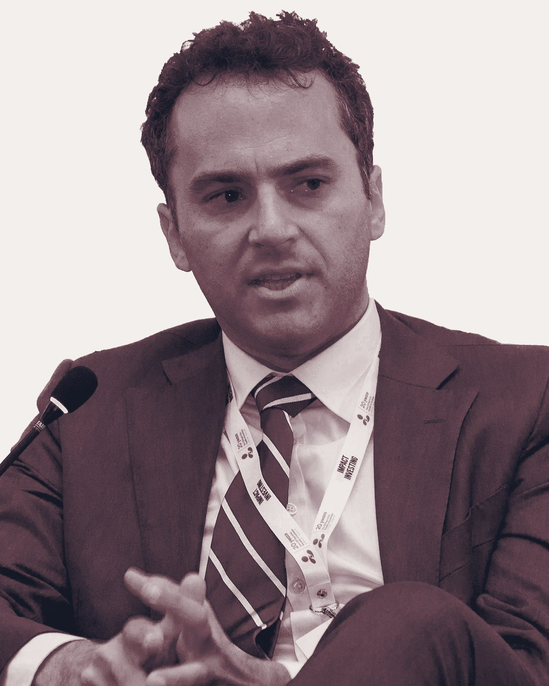
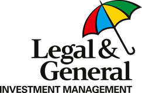
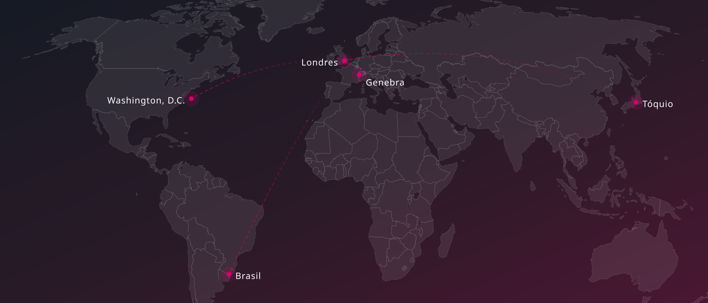
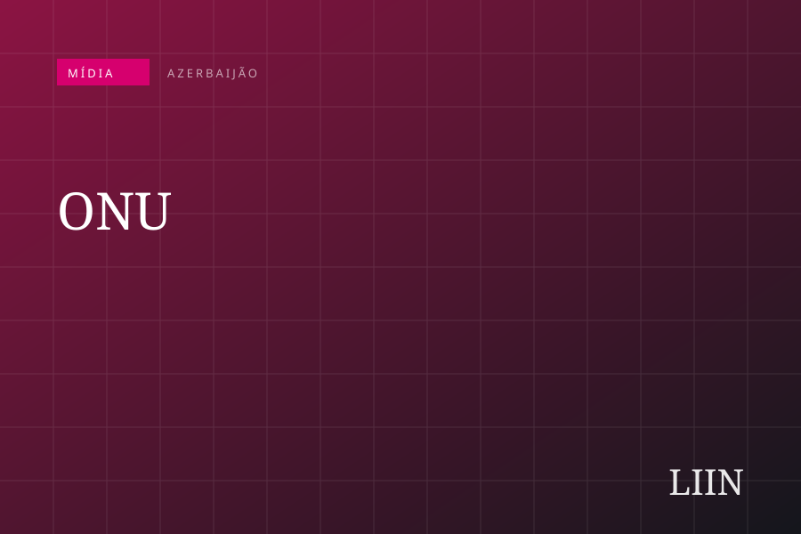
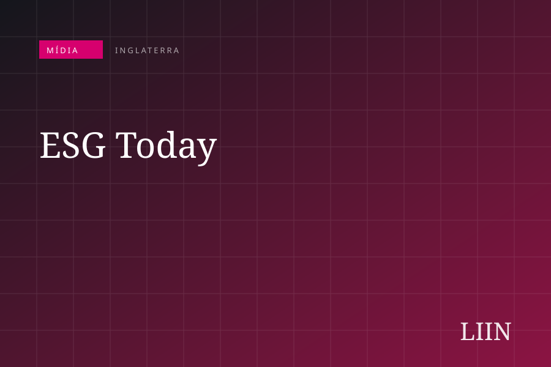
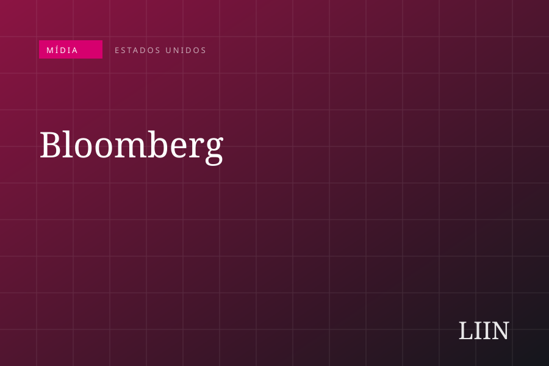
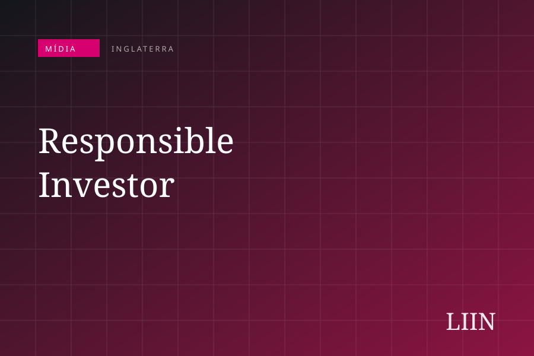
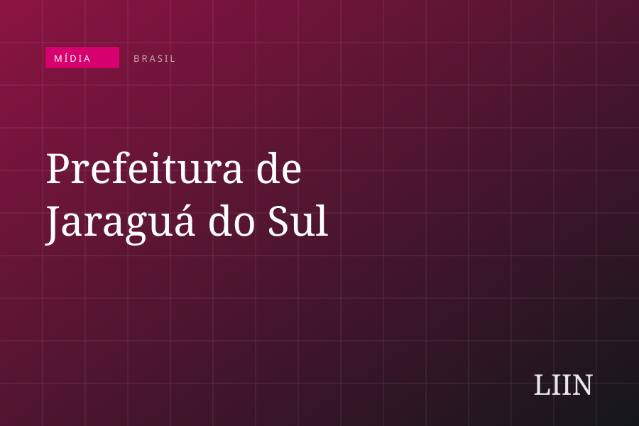
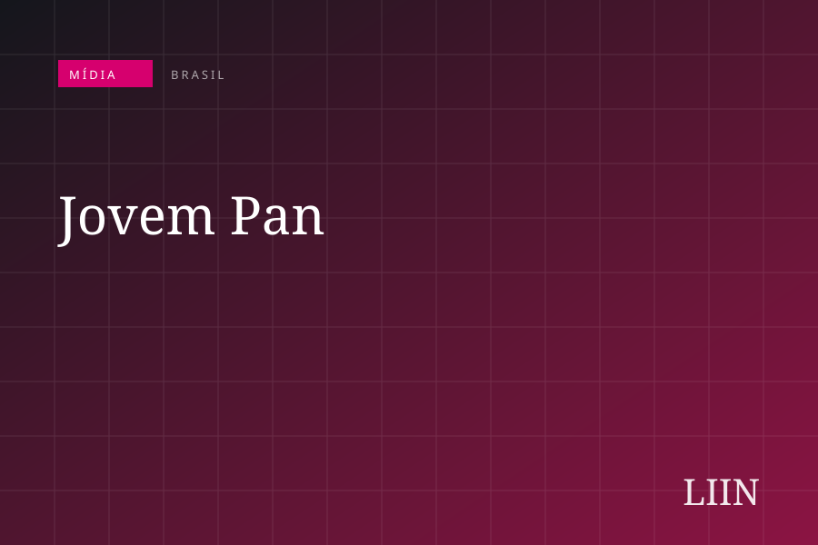

Uma iniciativa global de investimentos de impacto e ESG, com sede em Londres e operação regional no Brasil.
O LIIN conta com colaboradores no Brasil como no exterior, com experiência comprovada em investimentos de ESG em mais de 25 países e relações com um network global com mais de 5.000 investidores, representantes de bancos de desenvolvimento, agências bilaterais de financiamento, organismos internacionais e governos em países emergentes e da OCDE.
Estruturar, posicionar e maximizar o impacto financeiro e institucional de nossos parceiros no mercado de ESG.
Articular ESG de forma fragmentada é um risco que custa caro. Por isso o LIIN Brazil não tem estrutura de consultoria: seu diferencial está na parceria estratégica, com suporte contínuo desde os primeiros passos no mercado de ESG.
Cada parceiro local entra em uma rede global de investidores, organismos multilaterais e fundos internacionais — o ecossistema que o LIIN construiu desde 2019.

Founder do LIIN · Managing Director do LIIN Brazil
Duas décadas no mercado financeiro global e em organismos internacionais, em mais de dez países. Foi executivo e membro da diretoria executiva do Legal & General Investment Management, responsável pela gestão de ESG do fundo global e pela relação institucional com fundos de pensões, organismos internacionais e governos de países emergentes da OCDE.
Antes, foi Assessor Especial de Investimentos Sustentáveis da ONU, orientando mais de 30 fundos institucionais na integração de critérios ESG em portfólios superiores a US$ 1 trilhão. No UN-PRI, foi Gerente Sênior para Investimentos de Impacto, coordenando iniciativas com mais de 180 gestoras e firmas de private equity em três continentes.
Em Washington, D.C., atuou no BID, Banco Mundial, FOMIN e IFC, estruturando investimentos para governos e empresas da América Latina e da Ásia — incluindo parte do portfólio ESG do FOMIN e Viability Gap Funds em infraestrutura na Índia, Paquistão e Tailândia.

Banco Mundial · FOMIN
A equipe do LIIN é global — de parceiros em Washington, D.C., a times em Londres e no Brasil, somando décadas de experiência em investimentos e gestão de ESG em fundos, multinacionais, organismos públicos e organizações internacionais.







O LIIN está sempre em busca de profissionais altamente qualificados. O perfil exige fluência corporativa em língua estrangeira, experiência internacional em entidades no exterior, atuação no mercado financeiro, em organismos internacionais ou em organizações públicas e privadas, além de excelentes habilidades comerciais e mentalidade empreendedora. Caso este perfil esteja alinhado com as suas credenciais, entre em contato conosco.